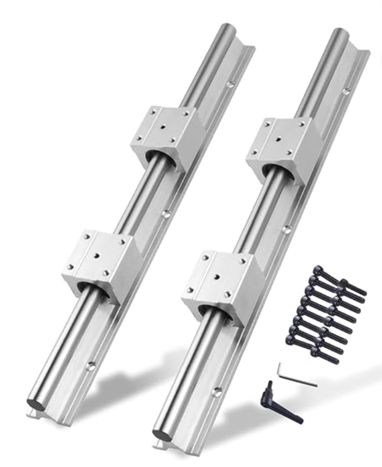
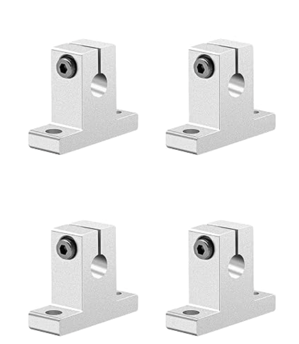
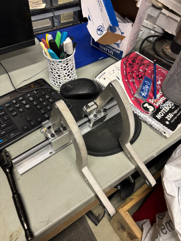
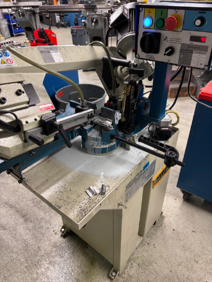
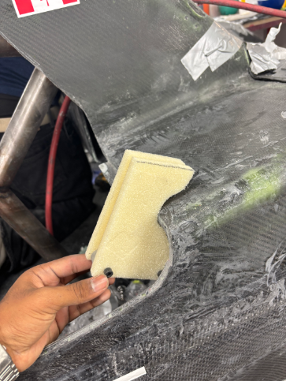
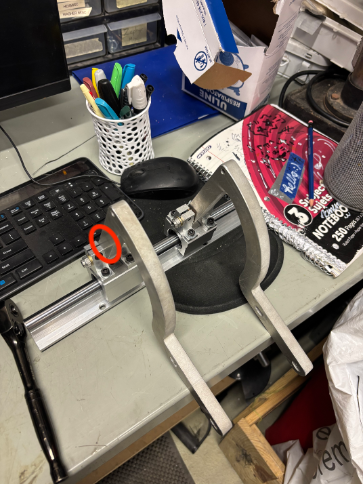

Building it in real life
Parts costed a lot from McMasterCarr, so I changed the design and switched to Amazon
- The documented dynamic load rating for the SBR12UU sliders are 372 N, which were much higher than the 90 N accounted for the door.
- The pillow bracket supports were also bought off amazon to match the hole sizing of the slider block, ensuring a mounting point for the door hinge.


I noticed that the hinges used on the previous car were of the same material, and a perpendicular design gave the support of the added beam in the previous design so these hinges were recycled.
With that, the hinges came to life fully assembled, ready to be mounted into the car. At first glance, you may notice that the rails are a bit long for the translation we are looking for.

Enter big metal cutting vertical bandsaw(It's big):

Thankfully, makerspace allowed me to use their metal cutting bandsaw and steel was cut within just a few minutes.
ISSUE 01 - Mounting Arm Specifications
- When the mounting arms were made to spec as on the model, the contact and geometry for the mounting of the door was inaccurate.
- The first and obvious fix was to sand the top surface of the arms and do trial and error to see if they would retain contact.
- Due to the top of these arms being far too close to colliding with the car, this idea was scrapped...


FIX 01 - Longer Mounting Arm
To raise the door height, I will have to start raising the door at an area that was further back from the previous arm, giving the door a greater empty space to move in. It pivoted the door from far back, so the height difference should instanly be seen.

This idea solved the colliding geometry, but introduced two new issues that seemed more present now with longer mounting arms:
ISSUE 02 - Wobbly Mounting Arm

- The spacing between the pillow mounts and the door hinges introduced a wobble to the door hinge, which amplified due to the long arm.
- For the same angled deviation, the same lateral deviation that seems minimal closer up, becomes far greater at a longer arm.
- It was also noticed that using simple aluminium washers would stiffen the smoothness of the hinge. I needed to find a spacer that tightened the fit, but remained frictionless for the hinge to work.
ISSUE 03 - Uneven Surface Contact
- Although the longer arm did fix the colliding geometry, the issue of the surfaces aligning recurred; something I was trying to avoid.
- The surfaces were so uneven, that the door refused to move with the hinge as one, but was rather hanging on by a loose thread.
- Modular mounting methods for this are being designed and tested right now... TO BE UPDATED